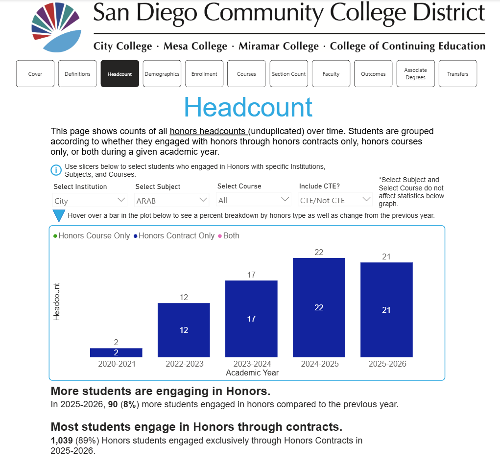
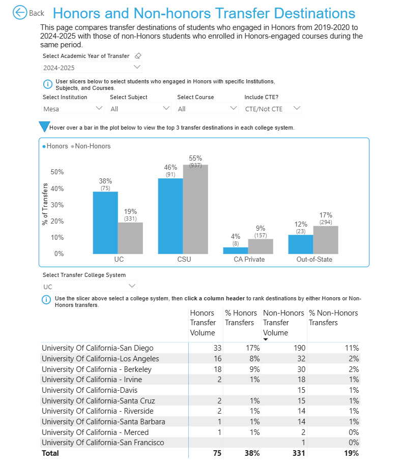

Community College Honors Report Dashboard
This Power BI report follows honors participation across the San Diego Community College District. Select a section to explore the report, or open a screenshot at full size.
Educators can find their specific programs
The Headcount page filters by institution, subject, and course. This view shows how many City College students participated in honors in the selected subject each academic year.

Going deeper to find trends
The faculty view pairs instructor counts with each group’s share of honors contracts. Here, the two charts show how Mesa College contracts were distributed in 2024–2025.

Integrating transfer data from the National Student Clearinghouse
The transfer page compares destinations for honors students and non-honors students who took honors-engaged courses. Selecting the UC system reveals the campus-level breakdown.
